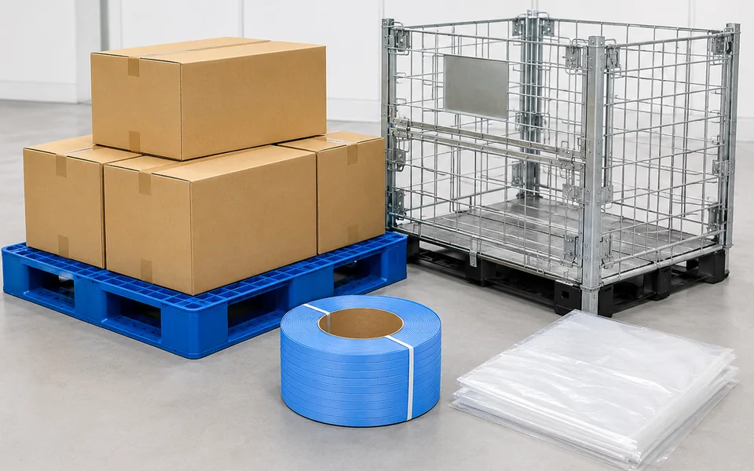

01
Logistics & Packaging Supplies
We supply a wide range of products, including plastic pallets, PP strapping, plastic bags, cardboard boxes, tapes, cushioning materials, and Nestainer racks. Drawing on long-standing business relationships and our network of partner companies, we flexibly source and propose everything from standard items to specialty products.
View our product range